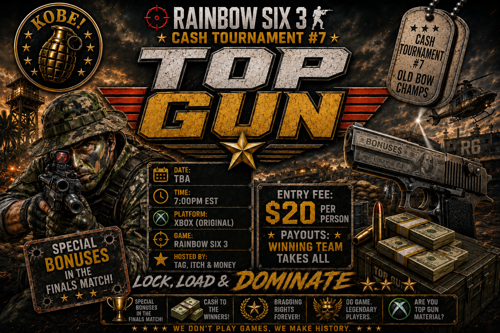

🏆 TBD
Tournament: Old Bow Cash Tourney #7 July 2026 "Top Gun"
Join us for another Cash Tournament for Old Bow. Winning team takes all this time around, with special bonuses in the finals match! Start dates TBD.

Format: 6 teams consisting of 6 players. Single elimination. Top seed gets second round bye.
Captains and pick order:
1. Engineer
2. Money
3. Itch
4. Mamba
5. Driver
6. Tag
Entry Fee: $20 must be paid by tourney start date. We will follow up with where to send the funds.
Draft Date: July 18th 6:30PM EST (Draft will be held live in the “Cash Tourney Live Draft” channel in this server. Captains will post their picks live.)
Draft Pool: Captains will pick their 5 players from the pool of signed up participants. Remaining players will be in the sub pool throughout the tournament.
Start Date: August 16th - everyone will have until August 16th to schedule their first matchup. Initial match must be scheduled prior to August 16th or the default set time for the first match is 6PM on August 16th.
Scheduling: Each team captain must have their team scheduled and ready to play within 10 days of the last match that determines the next matchup. If there is no agreed date to play their matchup, the default time will be the following Sunday at 6PM EST AFTER 10 days has passed from the match that determined the matchup.
Rules for Subs: Subs must be 1 pick position above or any pick position below the player being subbed out.
Tie Break Map: The 5th map in any matchup will be played on CSL IF the competing Team Captains cannot agree on an alternate map. Most rounds won determines spawn pick for tie break map - if it’s deadlocked, then a coin flip by a 3rd party will determine the spawn pick. Cannot play the same map twice - EXAMPLE: if Trainyard was already picked previously, teams cannot agree to play Trainyard again.
Shadow Glitching and Slow Walking: There will be NO slow walking or shadow glitching in this tournament. Captains and other teammates are highly encouraged and expected to call out their team for shadow glitching and slow walking. If the same person is called out or seen on stream more than once, a penalty may be administered (redo the round, or loss of a round - depending on the extremity of the infraction). This will be enforced by Itch, Money and Tag who WILL be watching streams. Captains on both sides are expected to work to a resolution. If it cannot be resolved, Money, Itch, and Tag will get involved. Mistakes happen, but we all know by now how to avoid slow walking and shadow glitching (stop lean walking and pre/firing… stop when you see someone to ensure you are not slow walking them). Anyone intentionally slow walking or shadow glitching will be banned from the tournament and any tournament I’m involved in coordinating. This is a competitive environment and we all would like a clean game, keep it fair!
Matchups and seeding: Initial matchups will be randomized. Top performing team in the initial round (best map/round differential) will get a bye in the 2nd round and go straight to the finals. This was a contested format in our discussions, so we are open to suggestions, but we ultimately thought it was best to determine the bye for performance and not a game of chance. In a 6 team single elimination bracket, this was the only way we could think of doing that. Contact us for suggestions.
Bonuses:
- First pistol kill in the tournament final - $50
- Best “Kobe” grenade kill for the entire tournament - must be caught on stream, will be reviewed and voted on by Money, Itch, and Tag. - $50
- First 5 piece for the tournament - get your matches scheduled early! - $25
- First 6 piece for the tournament - get your matches scheduled early! - $50
- 65 kills by a single player in a single match - $50
- Top Gun (MVP) - $50 - MVP is not necessarily the top killer. MVP will be voted on by Money, Tag, and Itch. MVP takes into account comms, holding off rounds, any other way for someone contributing to their team.
- Most Improved Player - $25